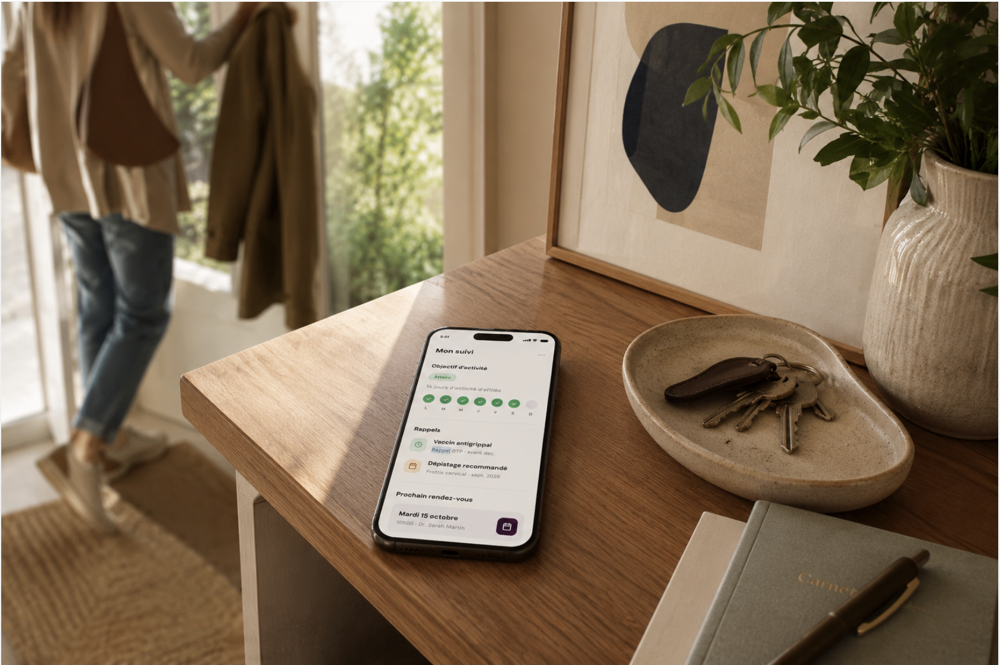

Votre suivi
On prend soin de votre cœur

Michelle Simes
52 ans
Antécédents
Traitements
Comptes-rendus
Votre médecin vous connaît vraiment
Vous partagez votre histoire, vos traitements et vos antécédents. Votre médecin connaît déjà l'essentiel pour se concentrer sur ce qui compte aujourd'hui.
Bilan de prévention
81
Bon état général
+4 depuis l'an dernier
Ça va bien
Activité physique
Nutrition
Addictions
À surveiller
Sommeil
Santé mentale
Vous comprenez mieux votre santé
Vous recevez un bilan clair de votre santé. Vous voyez où agir en priorité pour la préserver.
Mon plan d'action
Objectifs
Se coucher avant 23h30
Marcher 30 min / jour
Suivi
Point dans 3 mois
Défini avec le Dr Pavesi
Vous savez quoi faire ensuite
Vous repartez avec un plan adapté à votre santé, à vos objectifs et à votre quotidien.

Objectif atteint
14 jours d'affilée
Dépistage recommandé
Frottis cervical · sept. 2026
Prochain rendez-vous
Mardi 15 octobre · Dr. Sarah Martin
Votre suivi ne s'arrête pas à la porte du cabinet
Vous gardez le cap au quotidien. Votre médecin suit vos progrès et vous accompagne au bon moment.

Mon fils a de la fièvre depuis hier soir.
Quelle est sa température ? Respire-t-il normalement ?
38,8 °C. Il tousse mais il respire normalement.
Transmission au Dr Pavesi…
Transmis au Dr Pavesi
Vous n'êtes jamais seul·e avec vos questions
Vous n'êtes jamais seul avec vos questions. AMIA vous répond instantanément et votre médecin prend le relais lorsque c'est nécessaire.